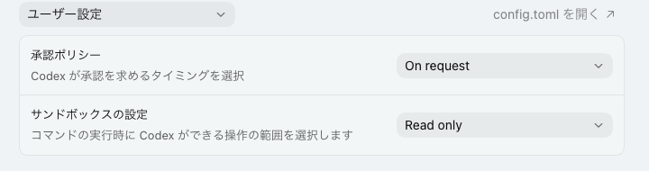
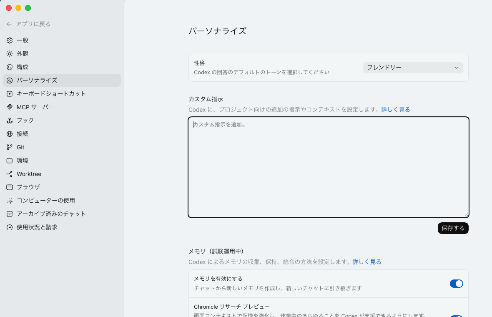
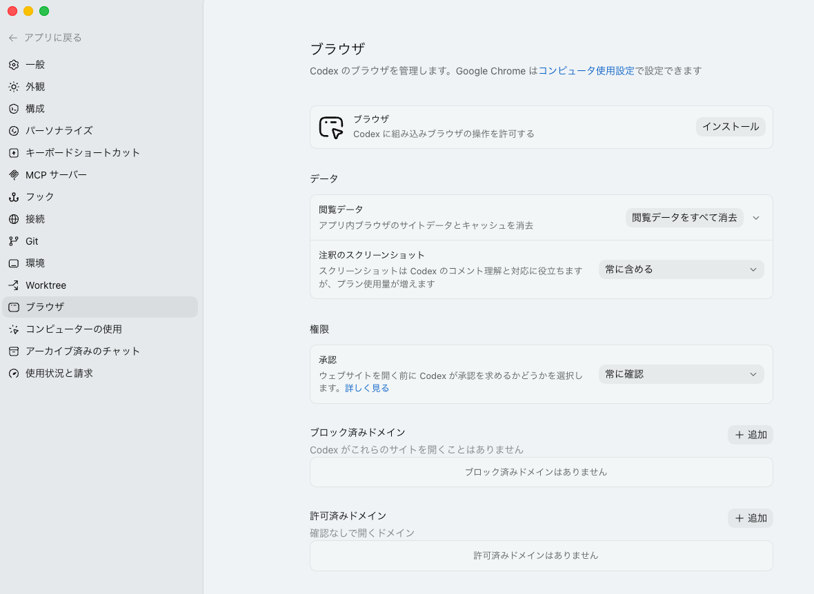
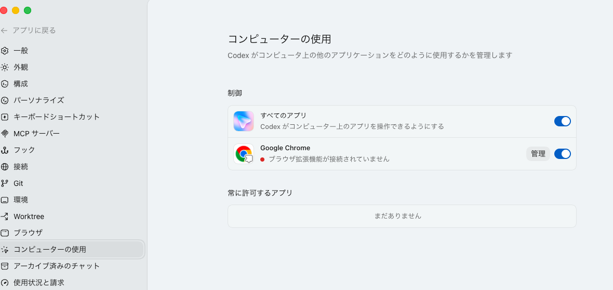
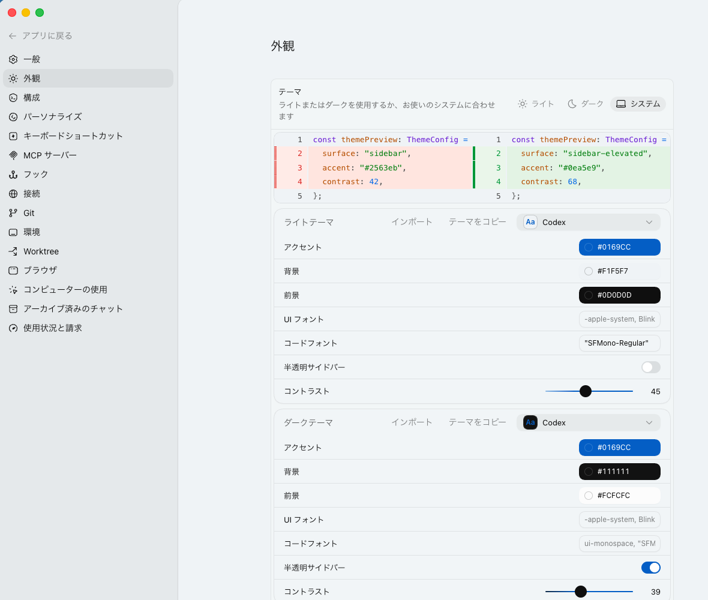
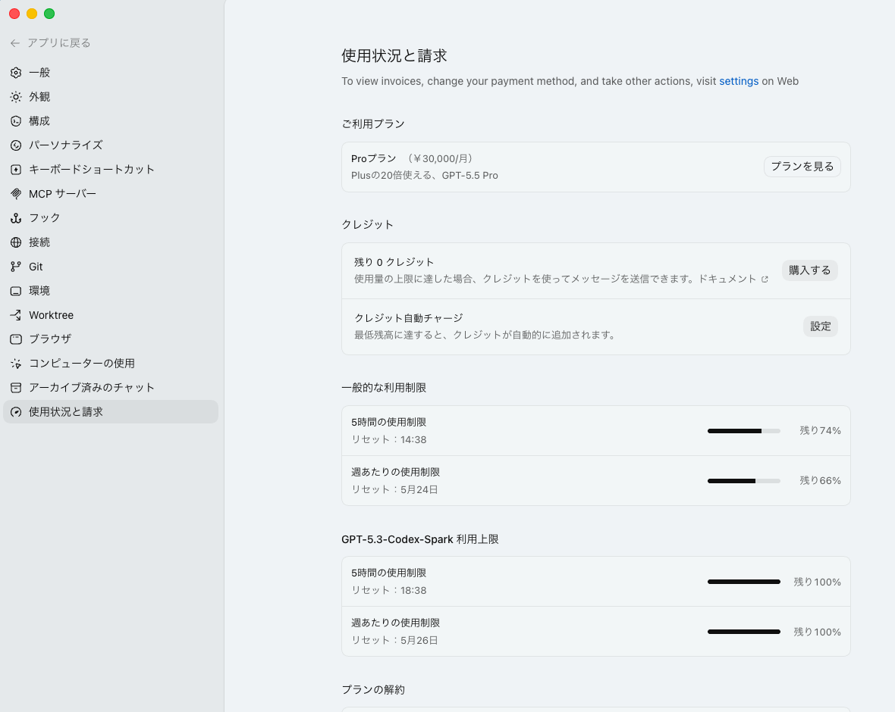
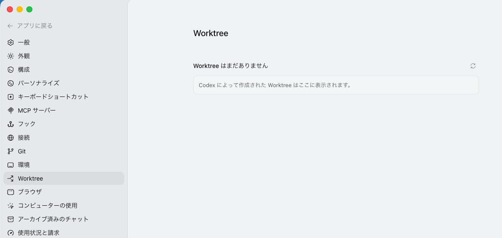

作業場所を限定できる
デスクトップ全体やダウンロードフォルダではなく、講座用のフォルダを選ぶと、関係ないファイルを触る心配を減らせます。
最初に理解すること
Codexデスクトップアプリは、最初に選んだプロジェクトフォルダを手がかりに作業します。 そのため、フォルダ構成が整理されているほど、Codexにも人間にも分かりやすくなります。
デスクトップ全体やダウンロードフォルダではなく、講座用のフォルダを選ぶと、関係ないファイルを触る心配を減らせます。
どこに何があるか決まっていると、Codexが作ったファイルや変更したファイルを見つけやすくなります。
フォルダ名や置き場所が整理されていると、「このフォルダの資料を見て」と短く頼めるようになります。
まずはデスクトップに AI-X フォルダを作り、その中を次のように分けておくと分かりやすいです。
AI-X/
├── 01_練習メモ/
├── 02_素材/
├── 03_Codexに作ってもらうもの/
└── 99_完了/体験してみる
Codexは選んだフォルダ内のファイルを確認し、必要に応じて作成や編集もできます。 最初は勝手に整理させず、提案だけ出してもらう練習にします。
Codexを開き、プロジェクトとして AI-X フォルダを選びます。まだ中身が少なくても大丈夫です。

次の文章を送ります。ポイントは「勝手に移動せず、まず提案だけ」と書くことです。
このフォルダの中身を見て、初心者にも分かるように整理案を出してください。勝手に移動せず、まず提案だけしてください。
提案を見て問題なければ、まずはフォルダを1つだけ作ってもらいます。
提案のうち、練習メモ用のフォルダだけ作成してください。Codexが変更内容を表示したら、内容を確認してから進めます。

ChatGPTとの違い
どちらが上という話ではなく、使う場面が少し違います。講座ではCodexの画面を使って、PC上のフォルダを扱う流れを体験します。
左下の設定
Codex左下の設定ボタンから確認します。初心者の方は、細かい設定を全部変える必要はありません。 「安全に使うための確認」と「Browser Use / Computer Useの準備」を中心に見ていきます。
作業モード、権限、通知、表示言語などを確認します。最初はおすすめのままで問題ありません。
通知はオンにしておくと、Codexの作業完了や確認待ちに気づきやすくなります。
承認ポリシーとサンドボックス設定を確認します。初心者の方は、Codexが確認を求める設定のままにしておくと安心です。
画面例のように On request や Read only が見えていれば、まずはそのままで大丈夫です。

Codexの返答の雰囲気や、追加で伝えておきたい指示を設定できます。講座前は無理に書かなくて大丈夫です。
性格は「フレンドリー」のままで問題ありません。慣れてきたら、自分の作業ルールを少しずつ追加します。

CodexがWebページを確認しながら作業するための設定です。必要な方は、画面の「インストール」からブラウザ機能を準備します。
承認は「常に確認」にしておくのがおすすめです。許可するWebサイトは必要なものだけにしてください。

Codexが他のアプリ画面を見たり、クリックや入力を手伝ったりするための設定です。
Macでは画面収録とアクセシビリティの許可を求められることがあります。Windowsで項目が見当たらない場合は、今回はスキップして大丈夫です。

文字が読みづらい場合だけ、テーマやフォントサイズを調整します。見た目の好みなので、講座前に必ず変える必要はありません。

利用上限や残りの使用量を確認できます。講座前に、ログインできているか、上限に近づいていないかだけ見ておくと安心です。

エンジニアの方は後で使う場面がありますが、今回の講座準備では詳しく設定しなくて大丈夫です。初心者の方はここで止まらなくて構いません。
分からない項目は、無理にオン・オフを変えず、そのままにしておきます。
Worktree
Worktreeは、同じプロジェクトを別の場所にもう1つ用意して、Codexに並行作業してもらうための仕組みです。 Gitを使うプロジェクト向けの機能なので、AI-X講座の事前準備では必須ではありません。
Localは、いま自分が見ている本来の作業場所です。Worktreeは、同じ資料の練習用コピーに近い場所です。 Codexに試してもらい、良さそうなら後で本来の作業場所へ戻す、という使い方をします。

初めての方は、まず普通に AI-X フォルダを選んで使えば大丈夫です。Worktreeは「エンジニア向けの便利機能」として、名前だけ知っておけば十分です。
最後に確認
全部できなくても大丈夫です。講座前にここまで進めたところまで分かっていれば、当日の説明が理解しやすくなります。
困った時
設定中に分からない表示やエラーが出た場合は、エラー画面のスクリーンショットを撮って保存しておいてください。